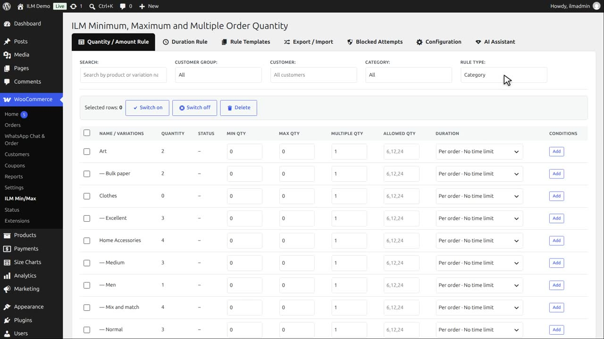
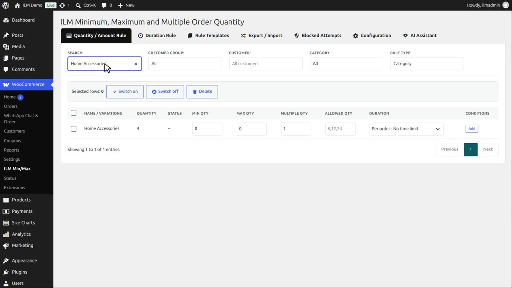
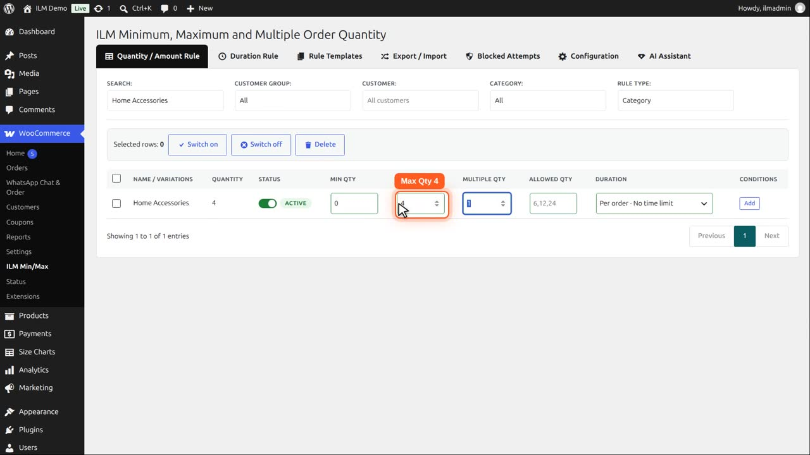
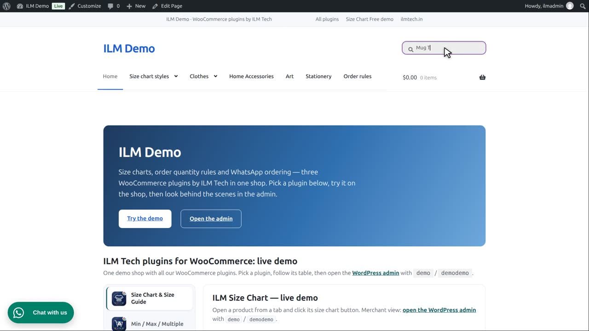
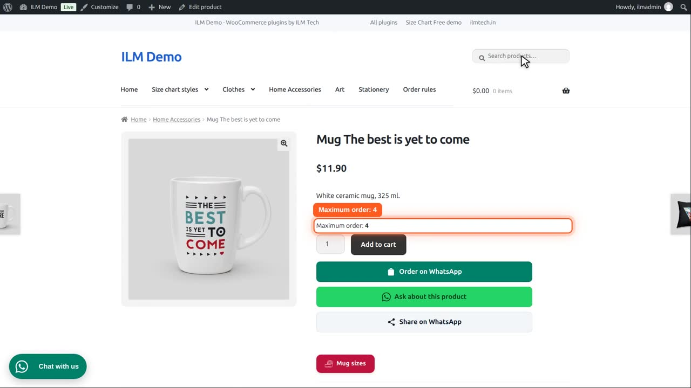
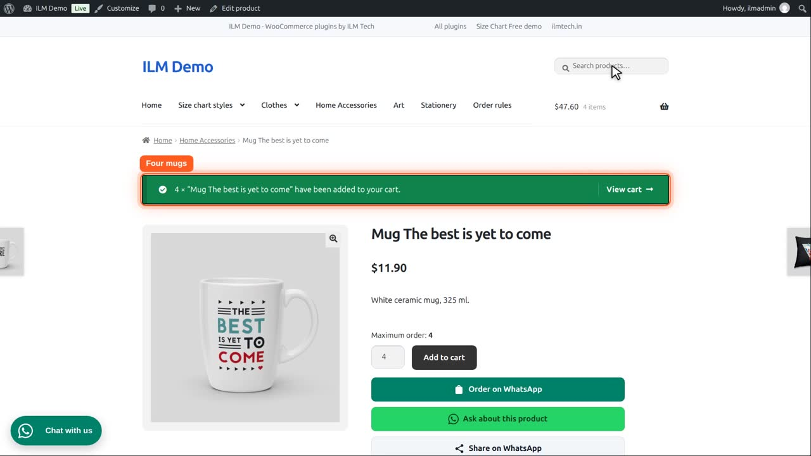
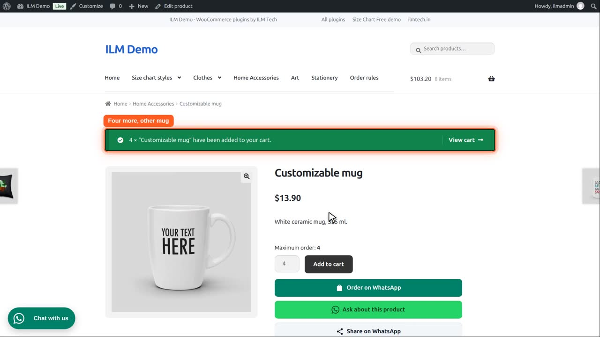
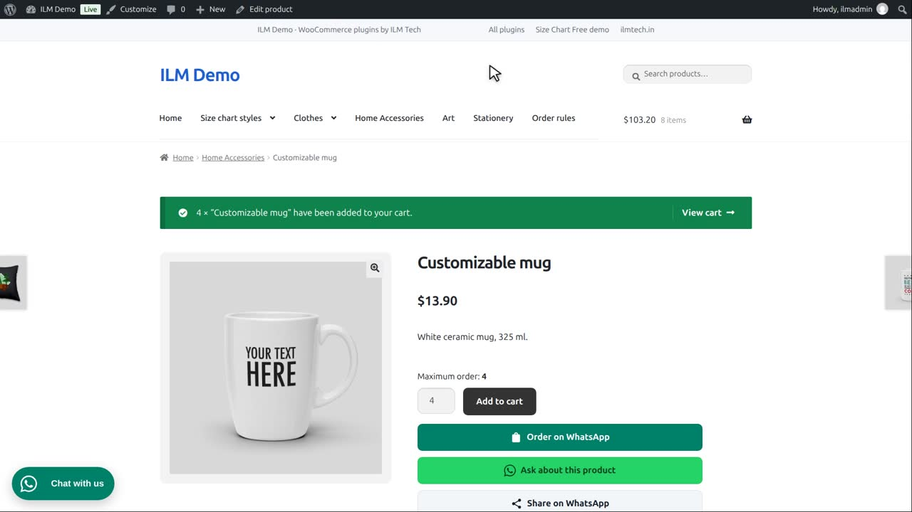
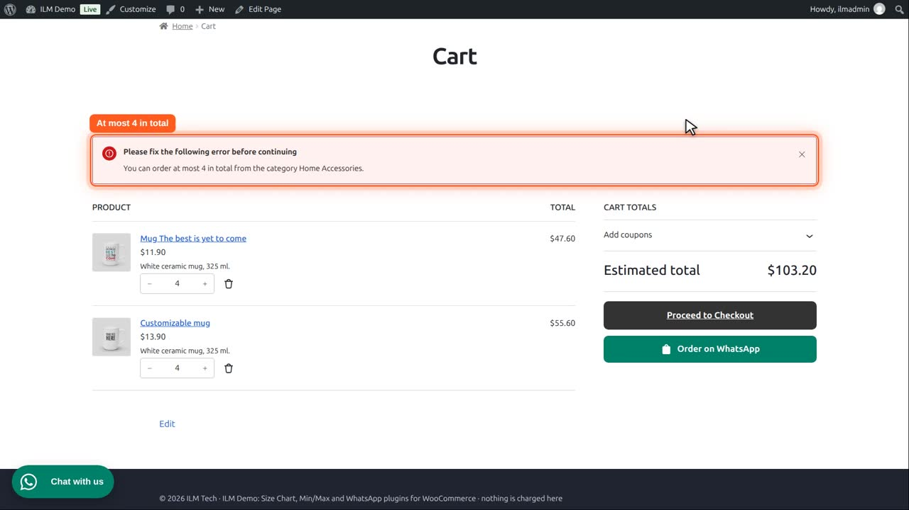

Pro add-on. This feature needs the Pro add-on. See Free and Pro.
| Level | What it does |
|---|---|
| Category Rule | Attach a rule to a whole category at once. |
Apply Rule to Individual Products (shown for Category / Brand / Tag / User Role / Global): Enable checks the limit separately for each product under that rule; Disable pools every product under the rule into one shared total.
On the Quantity and Amount Rule tab, set Rule Type to Category. The table now lists your categories.

Search for the Home Accessories category. It holds our mugs and cushions.

Type four in Max Qty. Every product in this category now has a maximum of four.

On the Configuration tab, the Category Rule card must be enabled. Apply Rule to Individual Products is enabled too: each product is checked on its own.

So each mug shows maximum order four.

Four of this mug go into the cart.

And four of a second mug are fine too, because each product counts on its own.

Now disable Apply Rule to Individual Products. All products of the category are added up into one total.

The same cart now holds eight mugs from the category, so it says: at most four in total from Home Accessories. Checkout refuses the order until the total is four or less.

They remove the second mug. Four in total: the message is gone.